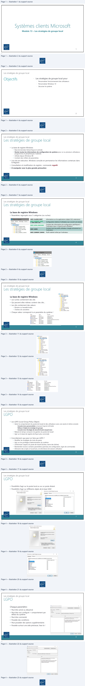
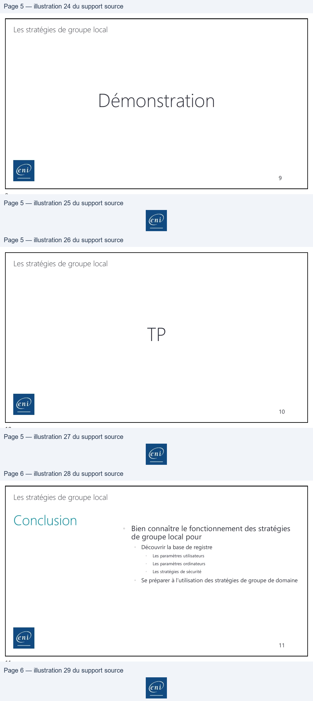

Transcription du document du Drive TSSR. La mise en forme est adaptée au Web ; les compléments IA du portail sont présentés séparément.
Module 13 – Les stratégies de groupe local
1
1
Les stratégies de groupe local
•
Personnaliser l’environnement des utilisateurs
•
Personnaliser Windows 10
•
Sécuriser le système
2
2
Les stratégies de groupe local
• La base de registre Windows
• Base de données hiérarchique et centrale
• Stocke toutes les informations de configuration du système pour un ou plusieurs utilisateurs,
programmes et périphériques matériels
• Utilisée depuis Windows 98
• Contient des milliers de paramètres
• Lors de son exécution, Windows consulte en permanence les informations contenues dans
le Registre
• Consultation et modification du registre : commande regedit
• À manipuler avec la plus grande précaution
3
3
Les stratégies de groupe local
La base de registre Windows
• Paramètres regroupés sous 5 catégories (ou ruches)
HKEY_CLASSES_ROOT
Informations sur les applications (objets OLE, extensions)
HKEY_CURRENT_USER
( = HKEY_USERS \ SID )
Configuration relative à l'utilisateur qui a ouvert une session
HKEY_LOCAL_MACHINE
Contient des informations de configuration spécifiques à
l'ordinateur (pour n'importe quel utilisateur)
HKEY_USERS
Contient tous les profils utilisateur chargés activement sur
l'ordinateur
HKEY_CURRENT_CONFIG
Profil matériel utilisé par l'ordinateur
4
4
Fichier
Edition
Affichage
Favoris
?
Ordinateur
v
™& Ordinateur
>
HKEY_CLASSES_ROOT
>
HKEY_CURRENT_USER
>
HKEY_LOCAL_MACHINE
>
HKEY_USERS
>
HKEY_CURRENT_CONFIG
| HKEYCLASSESROOT _ _ | Informationssurlesapplications(objetsOLE extensions) , |
| HKEYCURRENTUSER ( = HKE_Y _USERS \ SID_ ) | Configurationrelativeàl'utilisateurquiaouvertunesession |
| HKEYLOCALMACHINE _ _ | Contientdesinformationsdeconfigurationspécifiquesà l'ordinateur(pourn'importequelutilisateur) |
| HKEYUSERS _ | Contienttouslesprofilsutilisateurchargésactivementsur l'ordinateur |
| HKEYCURRENTCONFIG _ _ | Profilmatérielutiliséparl'ordinateur |
Les stratégies de groupe local
La base de registre Windows
• Les ruches contiennent des clés
• Qui peuvent elles-mêmes contenir des clés…
• Les clés contiennent des valeurs
• Binaires ou hexadécimales
• Chaînes de caractères
• Chaque valeur correspond à un paramètre du système !
5
5
Les stratégies de groupe local
• Les LGPO (Local Group Policy Object)
• Gérer le comportement du poste de travail et des utilisateurs avec une seule et même console :
• Console mmc personnalisée composant logiciel enfichable
• Éditeur d'objets de stratégie de groupe
• Console mmc Stratégie de sécurité locale (secpol.msc)
• Réduire le temps consacré à la gestion du poste de travail
• Agir sur la base de registre de façon plus conviviale
• Concrètement que peut-on faire par LGPO ?
• Modifier les stratégies de mots de passe
• Agir sur les privilèges d'administration du système
• Uniformiser l'aspect du poste de travail (bureau, barre des tâches)
• Restreindre l'accès à certains paramètres (panneau de configuration, ligne de commande)
• Démarrer des scripts à l'ouverture, à la fermeture de session utilisateur
6
6
VD Ordinateur
> EL HKEY.CLASSES ROOT
\
| HKEV_CURRENT._USER
>
[M
appivents
> El Console
3 LI Control Panel
Environment
> [| upc
> EL Keyboard Layout
3 [1 Printers
>
LI Software
> Li System
> LL Volatil Environment
> EI HKEY_LOCAL MACHINE
5
LL HKEY_USERS
>] HKEY_CURRENT_CONFIG
Nom
Type
Données
{ab {(par défaut |
REG SZ
(valeur non définie)
Auto Install
REG DWORD
0:00000000 (0)
#Defaut Attributes
REG_DWORD
100000200 (512)
28) Driver Name
REG SZ
Lexmark XC9200 Series Class Driver
Set As Default
REG.DWORD
100000000 (0)
3Shared
REG DWORD
0:00000000 (0)
=)
3) Use Existing
REG_DWORD
00000000 (0)
Les stratégies de groupe local
• Possibilité d'agir sur le poste local ou sur un poste distant
• Possibilité d'agir sur différents objets de la base SAM
7
7
Les stratégies de groupe local
Chaque paramètre :
• Peut être activé ou désactivé
• Peut être non configuré = comportement par
défaut du système
• Peut être commenté
• Possède des conditions
• Peut posséder des options supplémentaires
• Possède surtout une aide précieuse, lisez-la !
8
8
Stletonner un objet desta de groupe
X
Rechercher un objet Stratégiede groupe
2
x
Aesstrt
Stratégie
de
r
ok
Sette Seeww
Ordinateurs | Utisateurs
Utisateurs et groupes locaux compatbles avec La stratégie de groupe locale
Les cb
de te de group ae ot che mr
Nom
I existedes objetsde tr.
—
Non
Ut
aden aca parecer otde
& DefautAccourt
Non
BE Georges
Non
romain
Non
Oh de arte de ovine
& Seven
Now
BE WDAGUy Account
Non
BY Aéminisrateurs
Non
{Be Non séminstræteus
Non
CiAtotera modficaton du consort got
Hede rage depauem eleet à
par del ine deComa CG ne a
at
‘vou evegateria conne
a
SESE
tore)
[Tamer
Annuler
env
1 supprimer Jeux du menu Démaner
ao
x
LEA Suprimere in Jumr Dinar
——
———
@noncontigué
Conmetae
Ou
Ont
isencharger f= Server 2008|
Windows Vis
Sica pooreae
et
me Demarer
matte pesteenvi oerJoa
Si ce pun espe et scie ov
ps configu,
ica Demand ren deu
tat chit ete pre das
Parme
Cha Man Dower
env

Les stratégies de groupe local
9
9
Les stratégies de groupe local
10
10
Les stratégies de groupe local
• Bien connaître le fonctionnement des stratégies
de groupe local pour
•
Découvrir la base de registre
•
Les paramètres utilisateurs
•
Les paramètres ordinateurs
•
Les stratégies de sécurité
•
Se préparer à l’utilisation des stratégies de groupe de domaine
11
11
| • | Bien connaître le fonctionnement des stratégies de groupe local pour |
| • Découvrirlabasederegistre | |
| • Lesparamètresutilisateurs | |
| • Lesparamètresordinateurs | |
| • Lesstratégiesdesécurité | |
| • Seprépareràl’utilisationdesstratégiesdegroupededomaine | |
| 11 |
